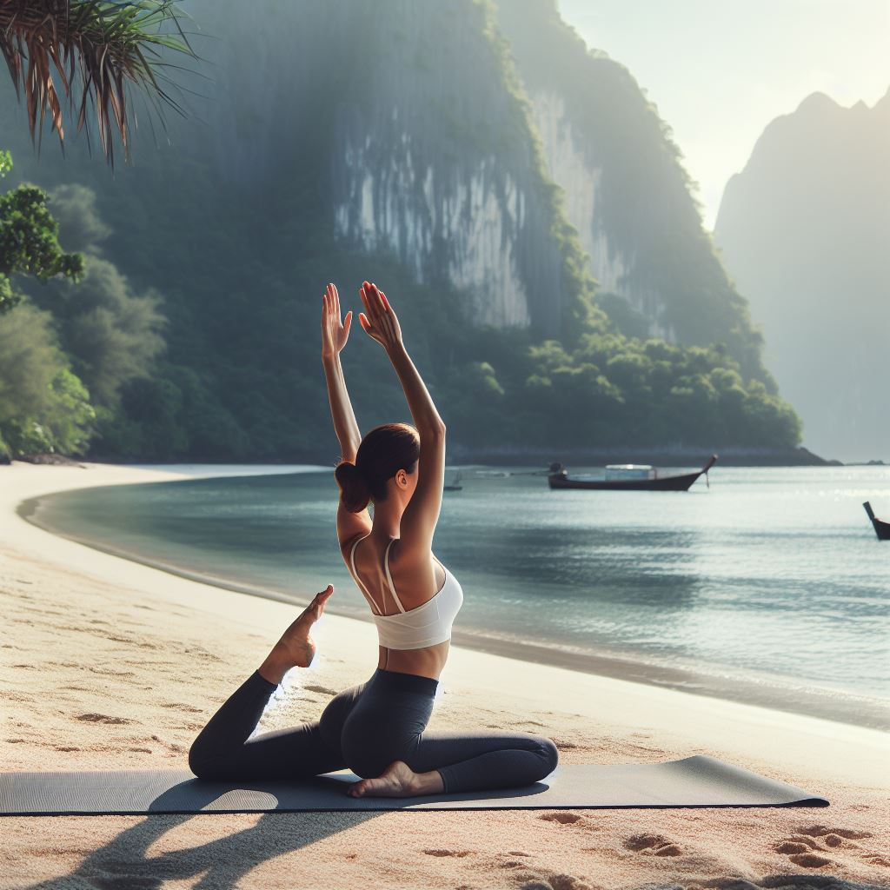

Benefícios do Pilates
A importância de praticar pilates
O pilates é uma atividade física que combina exercícios de força, flexibilidade, equilíbrio, respiração e concentração, visando integrar o corpo, a mente e o espírito. O pilates foi criado pelo médico alemão Joseph Pilates, no início do século XX, com o objetivo de reabilitar soldados feridos na guerra. Hoje, o pilates é praticado por milhões de pessoas em todo o mundo, que buscam os seus benefícios para a saúde e o bem-estar.
Mas afinal, por que praticar pilates e quais são os seus benefícios? Neste texto, vamos responder essas perguntas e mostrar como o pilates pode melhorar a sua qualidade de vida.
Benefícios do pilates
O pilates é uma atividade física completa, que trabalha todos os músculos do corpo, desde os mais superficiais até os mais profundos, chamados de core. O core é formado pelos músculos abdominais, lombares, pélvicos e diafragma, e é responsável pela sustentação e estabilização da coluna vertebral, da pelve e das vísceras.
Ao fortalecer o core, o pilates proporciona uma série de benefícios, tais como:
- Melhora a postura: o pilates corrige os vícios posturais e alinha a coluna vertebral, evitando dores, tensões e lesões na região. O pilates também melhora a consciência corporal, fazendo com que a pessoa adote uma postura mais adequada no dia a dia.
- Aumenta a flexibilidade: o pilates alonga os músculos e as articulações, aumentando a amplitude de movimento e a mobilidade. Isso facilita a realização das atividades diárias e previne lesões por esforço repetitivo ou por falta de aquecimento.
- Melhora a respiração: o pilates ensina a respirar de forma correta e consciente, utilizando o diafragma e as costelas. Isso melhora a oxigenação e a nutrição dos tecidos, além de favorecer o relaxamento e o controle emocional.
- Melhora o desempenho físico: o pilates aumenta a força, a resistência, a coordenação, o equilíbrio e a agilidade, melhorando o desempenho físico em outras modalidades esportivas e na vida cotidiana. O pilates também previne e reabilita lesões musculares e articulares, acelerando a recuperação e o retorno às atividades.
- Melhora a saúde mental: o pilates estimula a produção de hormônios como a endorfina, a serotonina e a dopamina, que promovem o bem-estar, a disposição, a alegria e a autoestima. O pilates também reduz os níveis de cortisol e adrenalina, que causam o estresse, a ansiedade e a depressão. Além disso, o pilates melhora a concentração, a memória, a criatividade e a capacidade de aprendizado.
- Melhora a saúde geral: o pilates melhora a saúde de diversos sistemas do organismo, como o cardiovascular, o respiratório, o digestivo, o imunológico, o nervoso e o endócrino. O pilates também ajuda a regular o peso corporal, a pressão arterial, o colesterol, o açúcar no sangue e a prevenir doenças crônicas, como diabetes, hipertensão, obesidade, osteoporose e câncer.
Como praticar pilates
O pilates pode ser praticado por pessoas de todas as idades, sexos, condições físicas e objetivos, pois os exercícios são adaptados às características e necessidades de cada um. O pilates pode ser realizado no solo, usando o peso do próprio corpo e acessórios como bolas, elásticos, pesos e rolos, ou em aparelhos específicos, que usam molas, alavancas e polias para criar resistência e facilitar ou dificultar os movimentos.
O ideal é que o pilates seja praticado com a orientação de um profissional qualificado, que possa avaliar, prescrever e corrigir os exercícios, garantindo a segurança e a eficácia da prática. O pilates pode ser feito individualmente ou em pequenos grupos, de duas a três vezes por semana, com duração de 45 a 60 minutos por sessão.
O pilates é uma atividade física que pode trazer inúmeros benefícios para a sua saúde e qualidade de vida, desde que seja praticado de forma regular e adequada. Por isso, procure um estúdio ou uma academia que ofereça o pilates e comece a desfrutar dos seus benefícios. Você vai se surpreender com os resultados!
